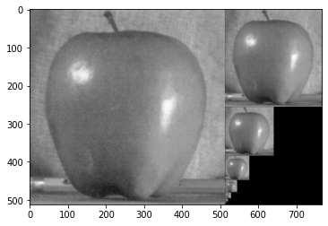
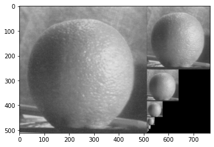
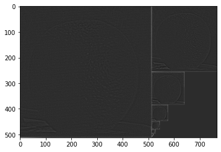
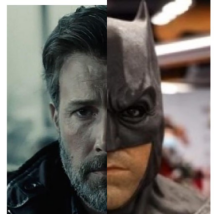
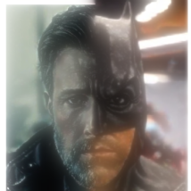
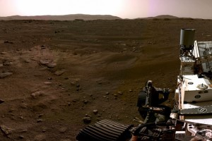
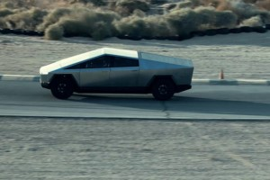
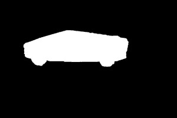
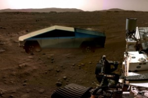

CSC 476/676 AU / Homework 3 / Image Blending Using Pyramids

Apple-Orange Direct Blending (Horrible).
We will take two color images as inputs and a binary mask images to produce the Laplacian pyramid blend of the two images. Below are the steps:
- Construct the Laplacian pyramid for each image.
- Construct the Gaussian pyramid for the two mask images (the input image and its complement)
- Multiply each Laplacian image by its corresponding mask and sum the images
- Reconstruct the final image from the Blended Laplacian pyramid.
We start by creating a Binomial (5-tap) filter as well as defining two functions (interpolate and decimate). Interpolates upsample the original image at r=2 while decimate downsample the original image at r=2. To simplify the pyramid construction process, we created a function (pyramids) with output of G and L, Gaussian and Laplacian respectively. A lot of time was saved using the starter code with these functions from Dr. Bei Xiao.
Gaussian Pyramid is simply a series of smaller and blurrier images of the original image.
Laplaccian Pyramid is the important edges of the series of smaller and blurrier images of the original image. We basically look at the differences of Gaussians at each scale. We take the Gaussian pyramid image at scale i minus K*blurred version of that image. You can look at it as high-pass image at scale i. You can look at it as if you are blurring out edges that are insignificant at the lower scales.

Apple-Orange Pyramid Blending (Much Better!).
Blended Pyramid and Collapsed Image
Once we have the Laplacian pyramid for each image, we can run it with our blend function (below) to iterate over each level and calculate the blended pyramid. Lastly, we collapse the pyramid, starting from the smallest (in reverse) to reconstruct a single blended image.
Blend and Collapse Codes
%Blended Code
def blend(left, right, mask):
# Iterate over each level to calculate the blended pyramid
blended = []
for i in range(len(mask)):
#right side only
#blended.append(mask[i]*left[i] + (1 - mask[i])*right[i])
#left side only
#blended.append(np.flip(mask[i])*left[i] + (1 - np.flip(mask[i]))*right[i])
#all sides
blended.append((mask[i]*left[i] + (1 - mask[i])*right[i]) + (np.flip(mask[i])*left[i] + (1 - np.flip(mask[i]))*right[i]))
return blended
blended = blend(L2,L,GM) #save blended pyramid as blended
%Collapsed Code
def collapse(pyramid):
# Iterate over pyramid levels starting from smallest (in reverse)
output = pyramid[len(pyramid)-1]
for i in range(len(pyramid)-1, 0, -1):
# Expand smaller level to next level
expanded = interpolate(output)
# Flatten expanded onto next level
output = expanded + pyramid[i - 1]
return output
ao_reconstructed = collapse(blended) #save collapsed image as ao_reconstructed
|    |
CV2 method
|   |
%CV2 Code
ben = cv2.imread('BenAffleck2.jpg')
bat = cv2.imread('batman2.jpg')
# generate Gaussian pyramid for Ben Affleck
G = ben.copy()
gpben = [G]
for i in range(6):
G = cv2.pyrDown(G)
gpben.append(G)
# generate Gaussian pyramid for Batman
G = bat.copy()
gpbat = [G]
for i in range(6):
G = cv2.pyrDown(G)
gpbat.append(G)
# generate Laplacian Pyramid for Ben Affleck
lpben = [gpben[5]]
for i in range(5,0,-1):
GE = cv2.pyrUp(gpben[i])
L = cv2.subtract(gpben[i-1],GE)
lpben.append(L)
# generate Laplacian Pyramid for Batman
lpbat = [gpbat[5]]
for i in range(5,0,-1):
GE = cv2.pyrUp(gpbat[i])
L = cv2.subtract(gpbat[i-1],GE)
lpbat.append(L)
# add left and right halves of images in each level
LS = []
for la,lb in zip(lpben,lpbat):
rows,cols,dpt = la.shape
ls = np.hstack((la[:,0:int(cols/2)], lb[:,int(cols/2):]))
LS.append(ls)
# reconstruct the images
ls_ = LS[0]
for i in range(1,6):
ls_ = cv2.pyrUp(ls_)
ls_ = cv2.add(ls_, LS[i])
# direct connecting each half and pyramid blending
real = np.hstack((A[:,:int(cols/2)],O[:,int(cols/2):]))
Using CV2 was definitely much easier but having an understanding of how Gaussian and Laplaccian pyramids works is essential for implementing advance blending of images. I recommend correcting image sizing, angles, positioning, and using high resolution images so your result can be clearer than mine.
Poisson Image Blending
The idea is to reduce color mismatch between source and target images then create composite in gradient domain. The goal is to have the gradient of the composite inside $\Omega$ to look as close as possible to the source image gradient while matching the target image on the boundary $\partial\Omega$.
The boundary of two images can easily be identified in most cases. To fix that, we use Poisson image blending to seamlessly blend the images. We will need a source (Cybertruck), target (Mars) and cybertruck-mask image. Cybertruck-mask image was created using paint 3d. Below is a quick explanation of the approach:
- Encode the target image (Mars) as gradients.
- We copy and paste the gradients of our source image (Cybertruck) to the area from the target image (Mars) where our source image will be.
- The original gradients in that area are replaced with our source gradients.
- Recover the final image from the modified gradients.
Results
|     |